2020补
高墙时代，做一个遵法守纪的好公民。
下文仅供娱乐，胡言乱语，且危言耸听，并无实际用途。
防火长城（英文名称Great Firewall of China，简写为Great Firewall，GFW），也称中国防火墙或中国国家防火墙，指中华人民共和国政府在其管辖因特网内部建立的多套网络审查系统的总称，包括相关行政审查系统。
这个系统容易屏蔽以下内容：
有政治敏感词的网站尴尬的新闻事件异议分子讯息政治活动网站不喜欢的微博宗教网站色情网站……
我初中的时候，根本就不存在f墙这一说，谷歌油管尽情遨游。但是后来，长城越来越高，越来越长，也就在最近四五年，对于越来越强大的GFW，衍生出了各种花里胡哨的f墙方式（梯子、打洞……）。之前一直用的Lantern（蓝灯），打开即用，懒人神器。后来不知道什么时候，为什么，灯不亮了……根据体验，GFW似乎不是一个傻呆呆的系统，它好像有一定学习能力，譬如今天在没有辅助手段能够访问的外国网站，也许明天就会被它发现并且屏蔽……
这里我只介绍两种方式，如果违反相关法律或有侵权一说，本人将在第一时间删除内容。
另外，因家境贫寒，Mac设备没有，但是Shadowsocks也有Mac版，具体操作并无不同。
家境贫寒+1，iPhone设备没有，但是AppStore里的小火箭（Shadowrocket）有同样功能，但是要购买这个应用（￥6）。
网页自带外挂（已失效）
适用于对于外网需求不高，或只局限于浏览网页。那么下面的方式已经能够满足了。
这个网站自带了f墙节点，提供了香港和新加坡两个地区目前支持以下服务：
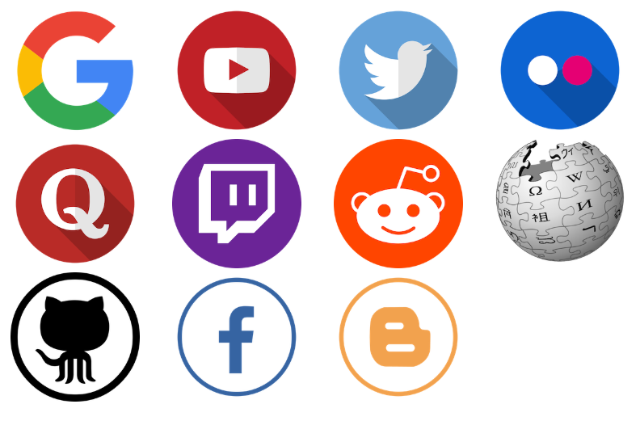
但是，类似于这个东西，稍微简单一点的是老王威屁恩，点击此处下载（仅限安卓用户），下载安装后连线成功即可。
ShadowSocksR
故事部分 可以掠过
前世：
Shadowsocks（简称SS）是一种基于Socks5代理方式的加密传输协议，也可以指实现这个协议的各种开发包。当前包使用Python、C、C++、C#、Go语言等编程语言开发，大部分主要实现（iOS平台的除外）采用Apache许可证、GPL、MIT许可证等多种自由软件许可协议开放源代码。Shadowsocks分为服务器端和客户端，在使用之前，需要先将服务器端程序部署到服务器上面，然后通过客户端连接并创建本地代理。
在中国大陆，本工具广泛用于突破防火长城（GFW），以浏览被封锁、遮蔽或干扰的内容。2015年8月22日，Shadowsocks原作者Clowwindy称受到了中国政府的压力，宣布停止维护此计划（项目）并移除其个人页面所存储的源代码。
为了避免关键词过滤，网民会根据谐音将ShadowsocksR称为“酸酸乳”（SSR），将Shadowsocks称为“酸酸”（SS）。
今生：
ShadowsocksR，简称SSR，**(Simple Sequence Repeats)标记是近年来发展起来的一种以特异引物PCR为基础的分子标记技术，也称为微卫星DNA(MicrosatelliteDNA),是一类由几个核苷酸（一般为1~6个）为重复单位组成的长达几十个核苷酸的串联重复序列。由于每个SSR两侧的序列一般是相对保守的单拷贝序列。**是网名为breakwa11的用户发起的Shadowsocks分支，在Shadowsocks的基础上增加了一些数据混淆方式，称修复了部分安全问题并可以提高QoS优先级。后来贡献者Librehat也为Shadowsocks补上了一些此类特性，甚至增加了类似Tor的可插拔传输层功能。
ShadowsocksR开始时曾有过违反GPL、发放二进制时不发放源码的争议，使得原开发作者不满不过后来ShadowsocksR项目由breakwa11转为了与Shadowsocks相同的GPL、Apache许可证、MIT许可证等多重自由软件许可协议。
2017年7月19日，ShadowsocksR作者breakwa11在Telegram频道ShadowsocksR news里转发了深圳市启用SS协议检测的消息并被大量用户转发，引发恐慌。7月24日，breakwa11发布了闭源的SS被动检测程序，引发争议。7月27日，breakwa11遭到自称“ESU.TV”（恶俗TV）的不明身份人士人身攻击，对方宣称如果不停止开发并阻止用户讨论此事件将发布更多包含个人隐私的资料，随后breakwa11表示遭到对方人肉搜索并公开个人资料的是无关人士，为了防止对方继续伤害无关人士，breakwa11将删除GitHub上的所有代码、解散相关交流群组，停止ShadowsocksR项目。
但是不用担心，网友的力量是强大的，至今为止，只要有节点，依然可以使用。
下载地址
电脑端在这里登机。
安卓端在这里登机。
在开车之前，有必要讲一下机内规则的一些东西。
SSR主要使用节点来对GFW进行突破，所谓ssr节点，就是在大陆外的主机服务器（主要是香港、台湾、新加坡），通过类似于账号密码的登录方式，将不能访问的外网通过节点服务器访问再将数据传输回本地的方式来进行f墙。节点也有免费和收费，收费的相对来说好一些，免费的存在高延迟（打游戏克星）不稳定的特点，有时候不能使用（称为坏点）。
但是我这里提供几个鸡场，建议薅羊毛，免费已经够用，根据我半年的体验，也挺稳定。
在这里注册鸡场账号，然后登录，每个月有大约十几个G的免费流量，每天签到还能随机获得2G或者更多的不等流量，反正免费是够用了，不建议充值。
还有两个鸡场我没有用过，就先挂在这里，以防不时之需。
正文
注册后大概是下面的样子（手机电脑大同小异）
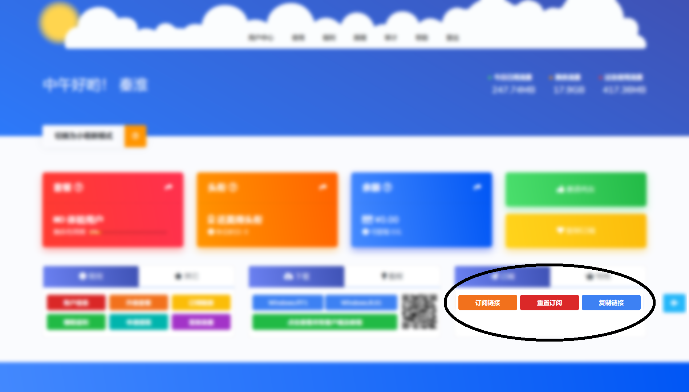
注意到黑圈里的，点击复制链接，先保存链接。
安卓配置
安装后初次进入以及前期配置如图
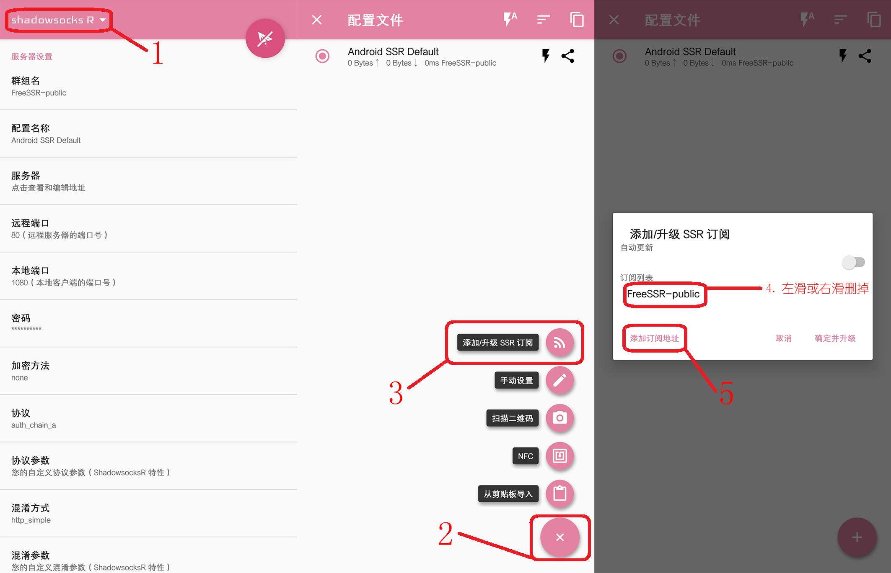
再之后将前面获得的链接粘贴进去，
订阅之后看图
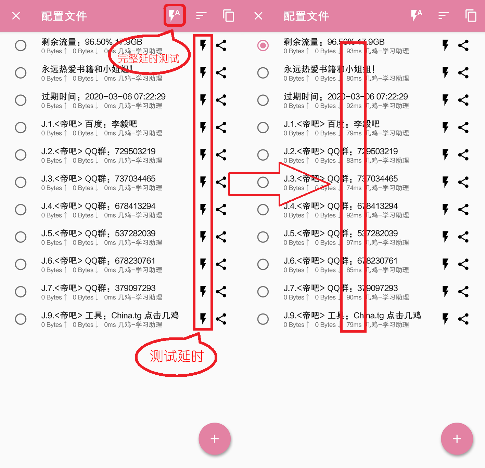
这里说一下：
**完整延时测试是将所有的节点进行测试，因为速度较慢本人不建议 ****测试延时是测试单个的节点，一般一秒多就可以得出结果，见上图，如果两秒没有反应点击空白取消，或者出现timeout以及长串的错误，说明这是个坏点，换一个试试 **
测试完后有延迟的即是可用的节点，点击这个节点后再点击右上角的小飞机，即可无限制的访问互联网。
电脑配置
这里提供两种方案，个人认为第一种优点是比较简便，缺点当节点更新的话需要重复操作。第二种操作起来其实也不是很麻烦，但是各种配置容易看花眼……
PLAN A
既然手机已经获得到了节点，点击右上角的复制按钮，可以将所有节点的信息复制到剪贴板，然后发送到电脑，然后电脑上打开SSR，右键之后点击图中标识部分即可导入，在手机上测试可用的节点在电脑上找到相应的那个，就可以无限制的访问互联网。

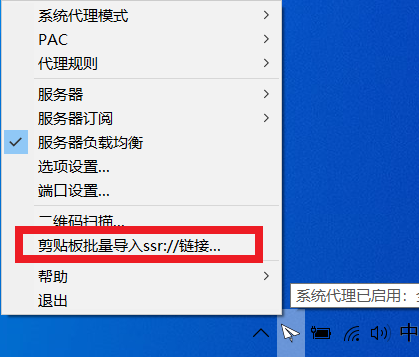
PLAN B
通过订阅链接直接导入，具体操作：
1.首先关闭服务器负载均衡
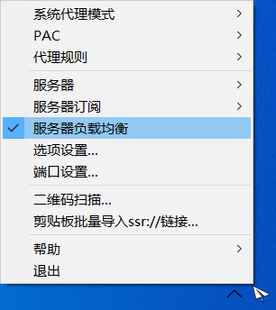
2.看图
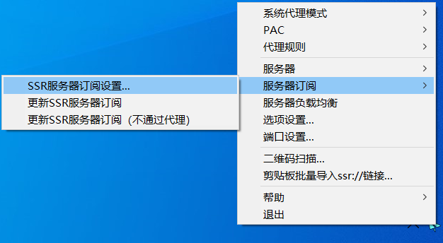
再次开机之后在小飞机右键服务器里出现下图中框选部分
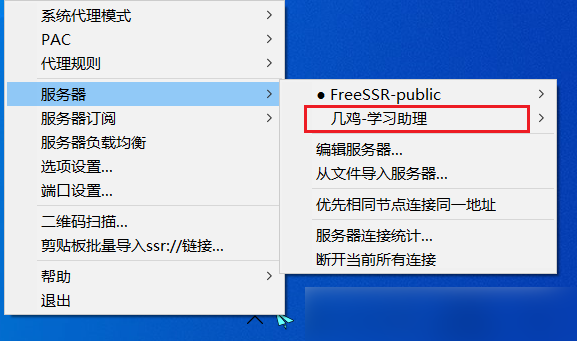
这时候点击上面的可用节点即可科学上网。
或者双击小飞机，出现下图，也是一样选中可用节点，确定即可上网。
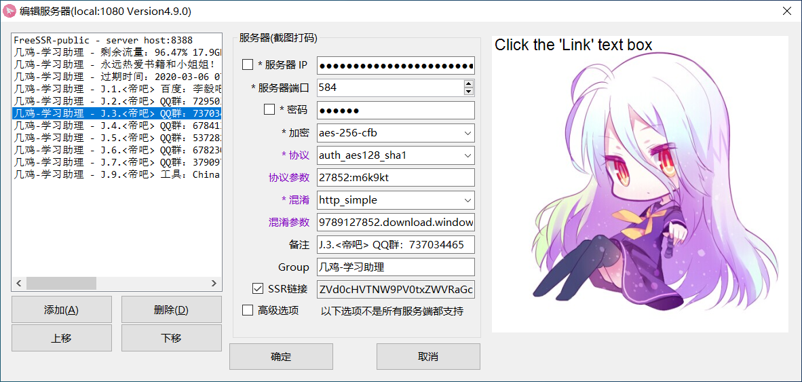
PS：查看节点相关信息（延时、上传下载速度以及使用流量）这样操作
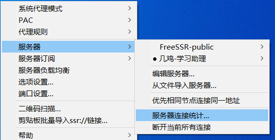
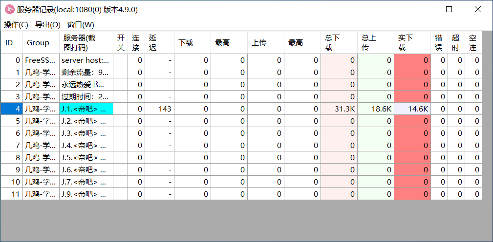